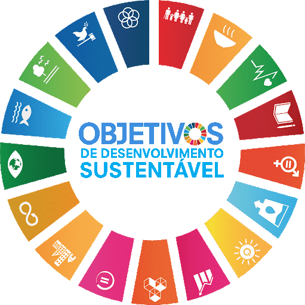

Sugestão de Receita
Sobre Nós

Nosso objetivo é abordar o Objetivo 15. Proteger, recuperar e promover o uso sustentável dos ecossistemas terrestres, gerir de forma sustentável as florestas, combater a desertificação, deter e reverter a degradação da terra e deter a perda de biodiversidade. Tendo em vista que o consumo de carne está diretamente relacionado com o grandes queimadas, degradação da terra e a perda de biodiversidade, além de todas as consequências desses eventos, é necessário a diminuição deste consumo para proteger, recuperar e promover o uso sustentável dos ecossistemas terrestres.